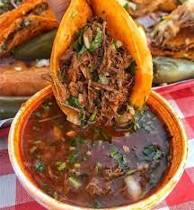

Birria Tacos

Birria tacos are quickly becoming one of the most popular and beloved style of tacos all over the United States.
These in particular are beef tacos that are made with braising the beef in fragrant 3-chile sauce.
Once the tacos are made you dip them back into the sauce or "consome" for a unique taco-eating experience.
Ingredients
- 6 dried guajillo chile peppers, seeded
- 2 dried ancho chiles, stemmed and seeded
- 4 dried chile de arbol peppers, stemmed and seeded
- 4 pounds beef chuck roast
- salt and freshly ground black pepper to taste
- 1 tablespoon olive oil, or as needed
- 4 Roma tomatoes
- 2 tablespoons white vinegar
- 6 garlic cloves
- 4 whole cloves
- 1 pinch of ground cinnamon
- 1 pinch of ground cumin
- 1 pinch ground thyme
- 1 pinch dried majoram
- 1 pinch dried oregano
- 18 tortillas, preferably corn
- 1 large white onion, finely chopped
- 1 bunch fresh cilantro, chopped
Directions
- Fill a pot with water and bring to a boil. Add guajillo, ancho, and arbol chile peppers; boil for 5 minutes. Remove pot from heat and allow peppers to soak until cool. Drain, reserving 1/4 cup of the water.
- Preheat the oven to 325 degrees F (165 degrees C).
- Rinse meat and pat dry with paper towels. Season with salt and pepper.
- Heat oil in a Dutch oven over medium-high heat. Add meat and cook until browned on all sides, about 10 minutes. Remove from heat.
- Line a heavy cast-iron grill pan or griddle with aluminum foil and place over high heat. Arrange tomatoes in a single layer on top. Grill until tomato skin is burned on all sides and begins to peel, 3 to 5 minutes.
- Combine soaked chile peppers, cooked tomatoes, vinegar, garlic, 2 teaspoons black pepper, cloves, cinnamon, cumin, thyme, marjoram, oregano, and salt to taste in a blender. Pour in reserved 1/4 cup of chile water; blend until smooth.
- Strain chile sauce through a mesh strainer and pour over the browned meat in the Dutch oven, turning roast so it is completely covered with sauce. Cover the Dutch oven and place in the preheated oven.
- Bake, basting meat every 45 minutes with the sauce, until birria begins to fall apart, 3 to 4 hours. Remove lid and bake uncovered until birria is crispy on top, about 20 minutes. Remove from oven, cover with 2 layers of aluminum foil, and allow to rest in a warm area for 10 minutes.
- Meanwhile, warm tortillas on a griddle. Fill each tortilla with birria and top with chopped onion and cilantro.
Cooks Note
You can prepare this dish in a slow cooker as well, but you will be sacrificing a little bit of flavor. Prepare the birria the same way, but place in a slow cooker instead of a Dutch oven and cook on High for 4 to 6 hours or on Low for 6 to 8 hours.
Nutrition Facts
Per Serving:
739 calories; protein 44.1g; carbohydrates 55.1g; fat 37g; cholesterol 137.5mg; sodium 165.7mg.
Per Serving:
524 calories; protein 26.4g; carbohydrates 58.5g; fat 20.7g; cholesterol 178.1mg; sodium 593.6mg